上一篇提到使用 Deployment with GitHub，Azure 當然要整合自家的 DevOps 才能將效益最大化，這一篇就來看看整合 DevOps 後能做到那些事情
串接 DevOps
假設大家都知道如何在 Azure DevOps 上面開專案跟將程式 Push 到上面，這時 App Service 要串接步驟就很簡單
-
【部屬中心】選擇 Azure Repos
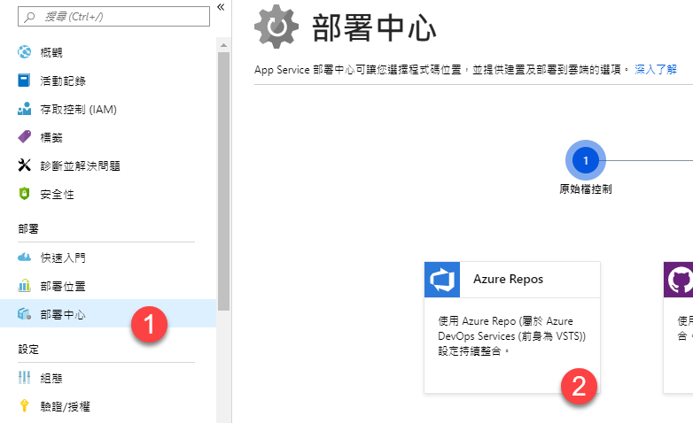
-
步驟二、不選擇 Azure Pipelines 就說不過去了
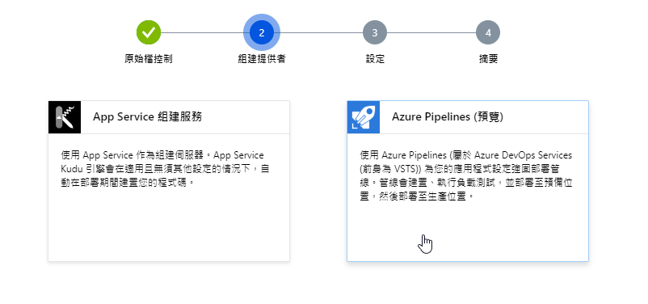
-
選擇專案放置的位置
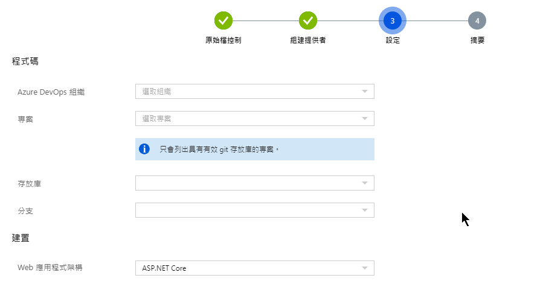
-
步驟四，確認無誤後即可完成整個動作
當上述動作完成後，我們回到 Azure Devops 的畫面，可以看到在 PipleLines 的 Build 頁面，看到一個自動產生的 Build Pipeline，更好的是，連 Release Piple 也一併完成了。
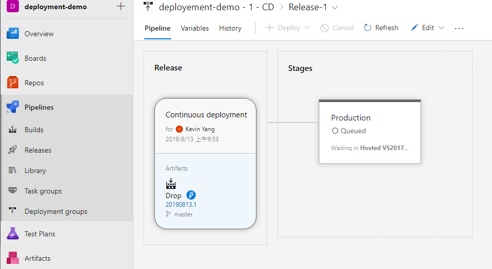
部屬中心顯示的歷史紀錄
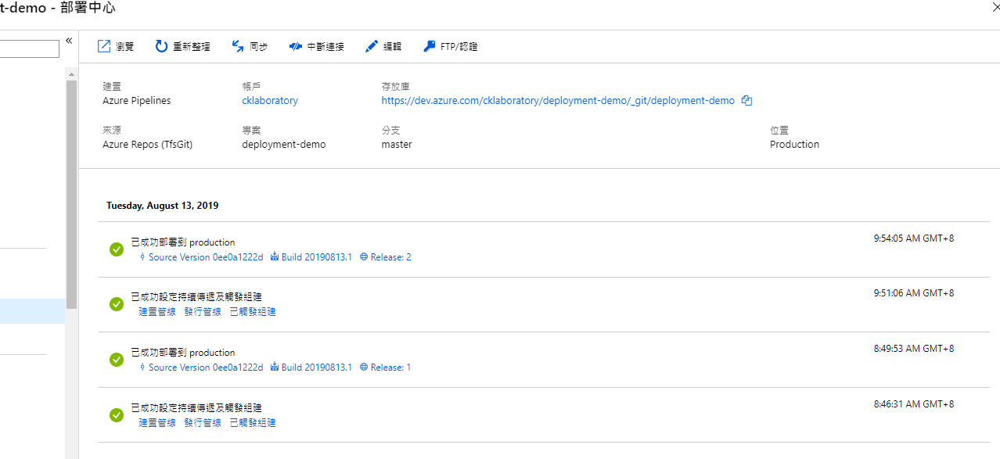
退版
當 App Service 部署中心連結到 DevOps 又選擇 pipelines 時，退版的動作就不一樣了，將會是透過 release pipeline 的 redeploy 來完成
-
選擇要退版的紀錄，並點選
release x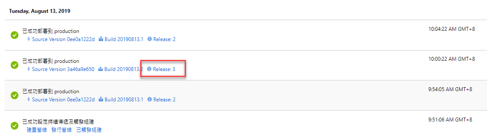
-
這時候會開啟該 Release pipeline 的操作畫面
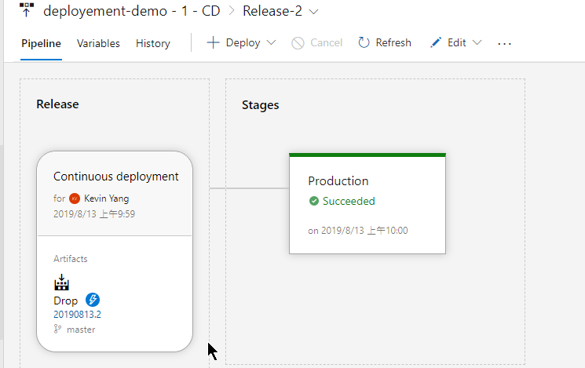
-
將滑鼠移到 stages production 的文字方框上，底下會出現
Redeploy的按鈕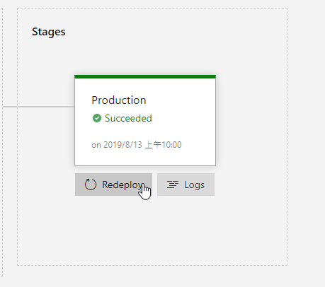
-
當按下
Redeploy的按鈕時，會跳出一個視窗做最後的確認，如果確定，就按下 Deploy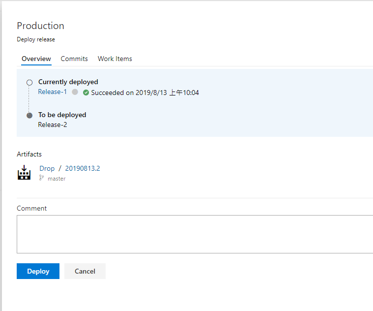
如何分辨目前所在版本
在 Pipelines -> Releases 的第一個畫面，可以透過 Stages 的顯示方式來得知目前的版本
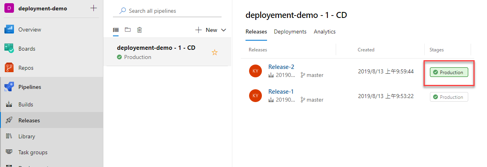
目前所在版本會用有背景色做標示
多 Stage 設定
如果我們想要做多 Stage 的 release 設定又要搭配 App Services 時，基本要求方案是基本以上(Standard)，先來將 App Service 使用的方案升級一下
App Service 部分
- 升級方案 (如果原本方案不支援部署位置功能)
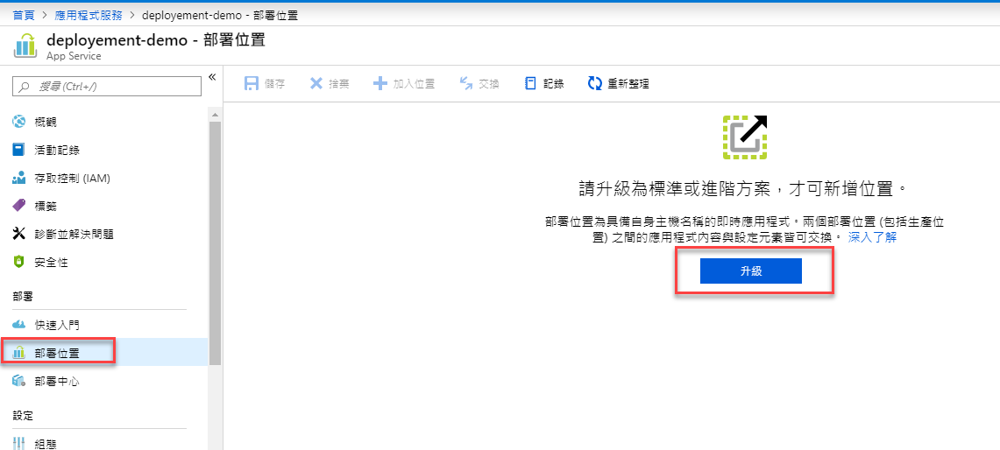
- 可以使用部署位置的最低方案為 S1
升級完成後，即可看到這一畫面
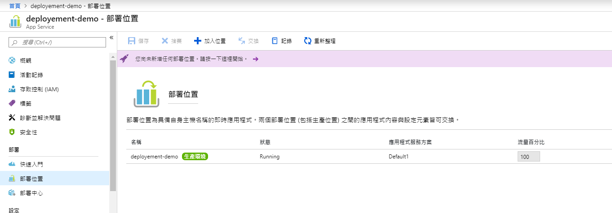
- 接下來是多加入一個位置 (Slot)
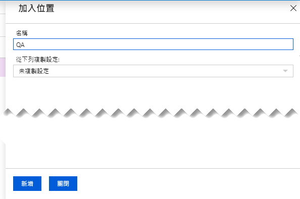
-
名稱: 位置名稱，可自己設定
-
複製設定: 假設原本已有設定一堆參數設定，這時候為了將設定一致性或是因為程式某些設定是吃環境參數設定時，就可以選擇要複製的站台
-
確認後即可按下【新增】按鈕
-
在部署位置頁面節可看到兩個部署位置，分別為獨立的站台 (各自擁有瀏覽網址)
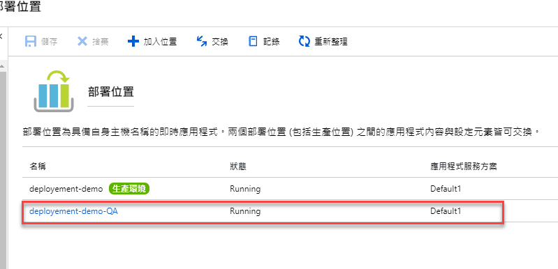
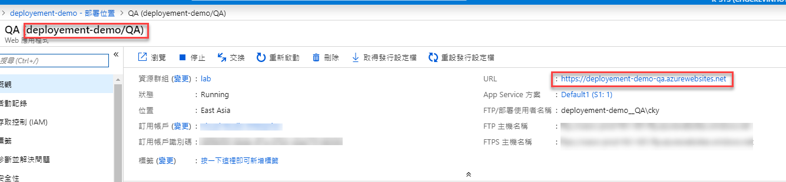
DevOps 部分
當 App Service 環節設定完成後，即可到 Azure DevOps 編輯 release pipeline
-
選擇 release pipeline 並進行編輯動作\
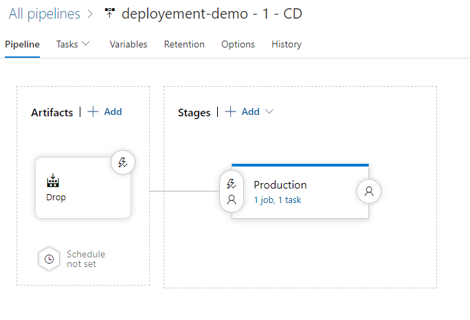
-
按下在 Stages 的 Add ，並選擇
New Stage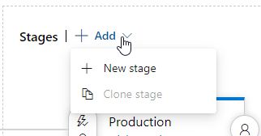
-
範本選擇: Azure App Service deployment with Slot
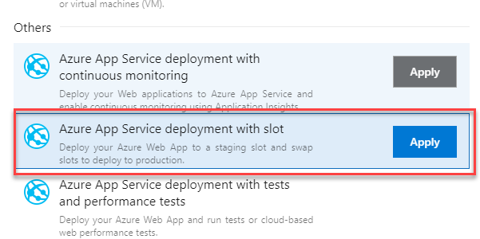
-
設定完 Stage 名稱後即可關掉該畫面
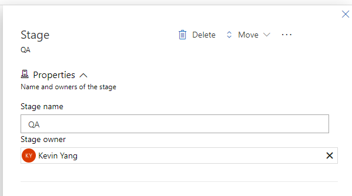
-
設定剛新增的 Stage
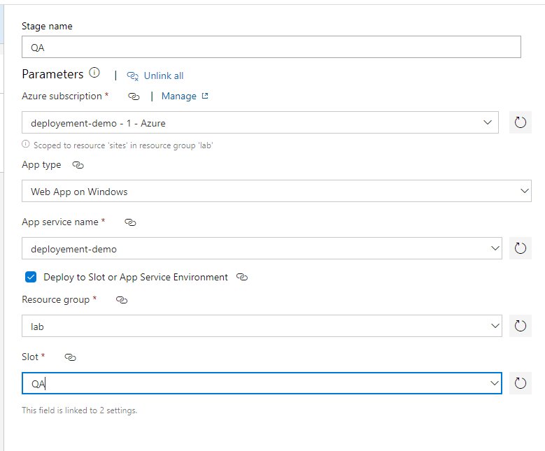
- Slot: 選擇剛剛在 App Service 所新增的新位置
-
如果不想要自動進行 Swap 動作時，則可以
Manage Azure App Service - Slow Swap給拿掉 -
設定完成後，可以先將預設的
Production切換成手動 -
記得儲存設定
測試
當新開的部署位置，該位置是不會有任何程式碼的，所以開啟該網址應該會看到這個畫面
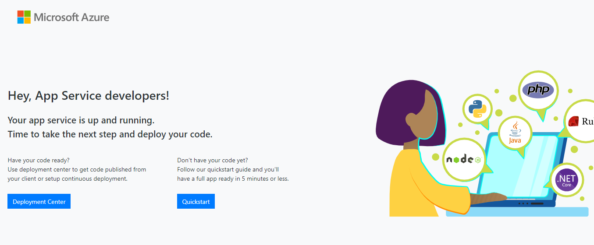
先 push 一個新的 commit 到 devOps Repo，重新觸發整個部署流程
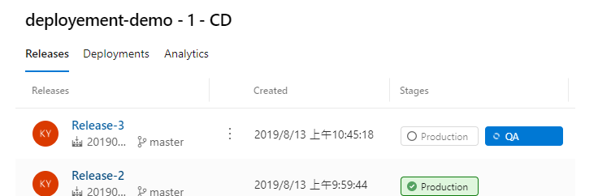
當一切完成後，剛新增的位置，就可以看到修改後的結果，而原本正式的網站還是保留原本舊版的畫面
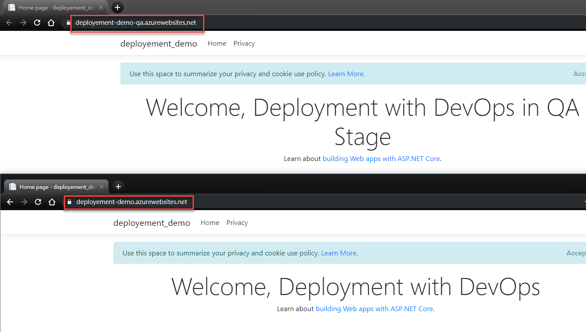
如果能正確地看到這個畫面，表示剛剛設定的 release pipeline 是正確的
交換
當我們確認一切的修改都是正確的，想要將 QA Stage 的內容更新到正式環境時，只需要透過【交換】的方式即可完成
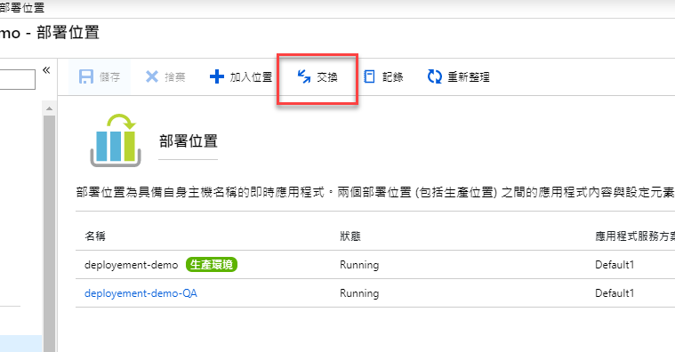
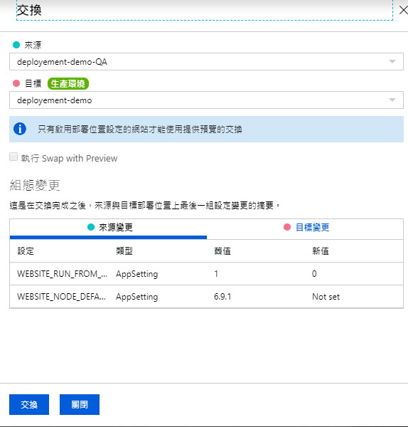
資訊確認後即可進行交換的動作，成功會出現的訊息
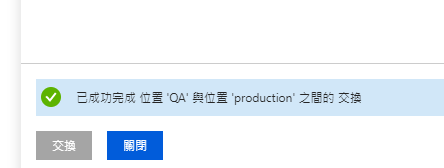
重新檢視兩個網站的內容，會發現顯示的內容的確有被交換
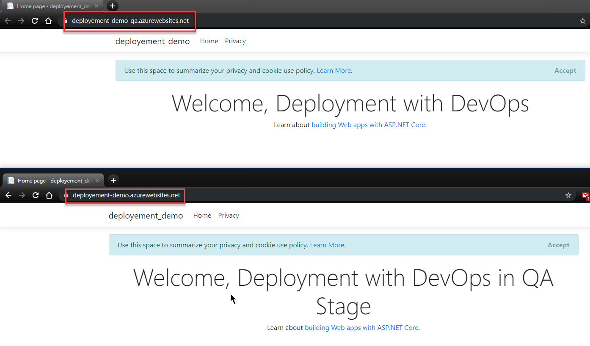
小結
Multi-stage 的設定當然沒有那麼簡單，而 App Service 的部署位置也可以玩一些不同的東西，但這一切就留在後面在玩吧。